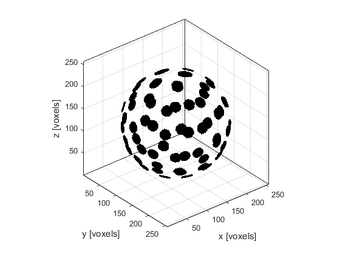

makeMultiBowl
Create a binary map of multiple bowls within a 3D grid.
Syntax
[bowls, bowl_labelled] = makeBowl(grid_size, bowl_pos, radius, diameter, focus_pos) [bowls, bowl_labelled] = makeBowl(grid_size, bowl_pos, radius, diameter, focus_pos, ...)
Description
makeMultiBowl creates a binary map of multiple bowls within a three-dimensional grid using makeBowl. The position of the bowls is denoted by 1's in the the matrix with 0's elsewhere. A labelled matrix can also be returned, where the position of the first bowl is denoted by 1's, the position of the second bowl by 2's, and so on.
Examples
% define grid parameters x_size = 300e-3; Nx = 256; dx = x_size / Nx; grid_size = [Nx, Nx, Nx]; % create a Cartesian sphere with the x, y, z positions of the bowls sphere_radius = 125e-3; num_bowls = 64; bowl_pos = makeCartSphere(sphere_radius, num_bowls, [1, 1, 1] * x_size / 2).'; % convert the Cartesian bowl positions to grid points bowl_pos = round(bowl_pos/dx); % define element parameters radius = round(x_size / (2 * dx)); diameter = 21; focus_pos = [1, 1, 1] * Nx/2; % create bowls makeMultiBowl(grid_size, bowl_pos, radius, diameter, focus_pos, 'Plot', true);
Inputs
grid_size |
size of the 3D grid given as a three element vector [Nx, Ny, Nz] [grid points] |
bowl_pos |
centre of the rear surface of each bowl given as matrix of dimensions N x 3, with each row specifying the centre for each bowl as a three element vector [bx, by, bz] [grid points] |
radius |
radius of curvature of each bowl given as either a single number (if the bowls have the same radius), or an N-element vector containing the radius for each bowl [grid points] |
diameter |
aperture diameter of each bowl given as either a single number (if the bowls have the same diameter), or an N-element vector containing the diameter for each bowl [grid points] |
focus_pos |
any point on the beam axis of the bowl given as either a three element vector (if the bowls have the same focus_pos), or as a matrix of dimensions N x 3, with each row specifying the focus_pos for each bowl given as a three element vector [fx, fy, fz] [grid points] |
Optional Inputs
Optional 'string', value pairs that may be used to modify the default computational settings.
| Input | Valid Settings | Default | Description |
|---|---|---|---|
'Binary' |
(Boolean scalar) | false |
Boolean controlling whether the bowl map is returned as a double precision matrix (false) or a logical matrix (true). |
'Plot' |
(Boolean scalar) | false |
Boolean controlling whether the bowl array is plotted using voxelPlot. |
'RemoveOverlap' |
(Boolean scalar) | false |
Boolean controlling whether overlapped grid points within each bowl (not between bowls) are removed. |
Outputs
bowls |
3D binary map of a bowls |
bowls_labelled |
3D labelled matrix of bowls |
See Also
makeBowl, makeMultiArc